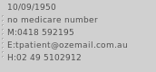

Useful Patient Details
The patients name and address are listed in the search text box as described previously.
Finding a Patient
A small list of some useful patient patient details are included - such as birthdate, medicare, contact details such as
home phone, email address etc.

These details are entered via the
Patients module.